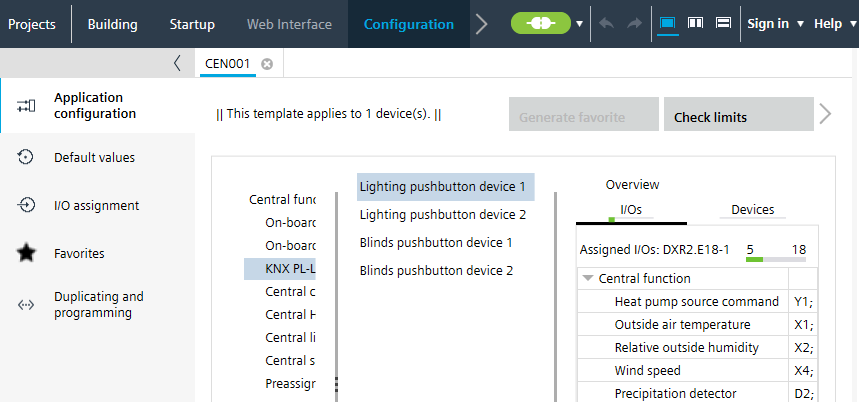

配置默认值（模板）
参数及其值可以在应用程序模板中配置为默认值。使用此编辑器可以更改 ABT 站点内与此模板关联的所有设备的默认值。
Configure default values
- Select an application template.
- Click Building > Application & device overview > Go to configuration or Configuration > Application selection > Open template.
- The Application configuration dialog opens.

- Select the Default values task.
- Click Show/hide parameter to open the dialog box.
Show/hide parameter (dialog box) - Select the parameters in the upper table. Click Add.
- Select the parameters in the lower table. Click Remove.
- Click OK.
- The parameters are added to or removed from the Default values table.
- Set the access property for each parameter value in the Avail. on AS column.
 : Parameter and value are visible and can be edited in ABT Site.
: Parameter and value are visible and can be edited in ABT Site. : Parameter and value are hidden and fixed as per the Default values table for the application template.
: Parameter and value are hidden and fixed as per the Default values table for the application template. 
该列可以通过使用进行过滤TorTrue仅显示选中的行并且ForFalse仅显示未选中的行。
- Modify the default values in the Value column.
- All new and all previously created automation stations with this template adapt the configured default values.
您只能在 ABT 站点中查看和更改参数值，如果Avail. on AS选中所选参数的复选框。这Avail. on AS复选框设置在Configuration > Default values.
Configuring default values (template)
如果选择，相应的对象参数将在以下区域中可用：
- Device details > Instance parameter page
- Application template details > Instance parameter tab
- Building > Device list > Load instance parameter
- Checkout report